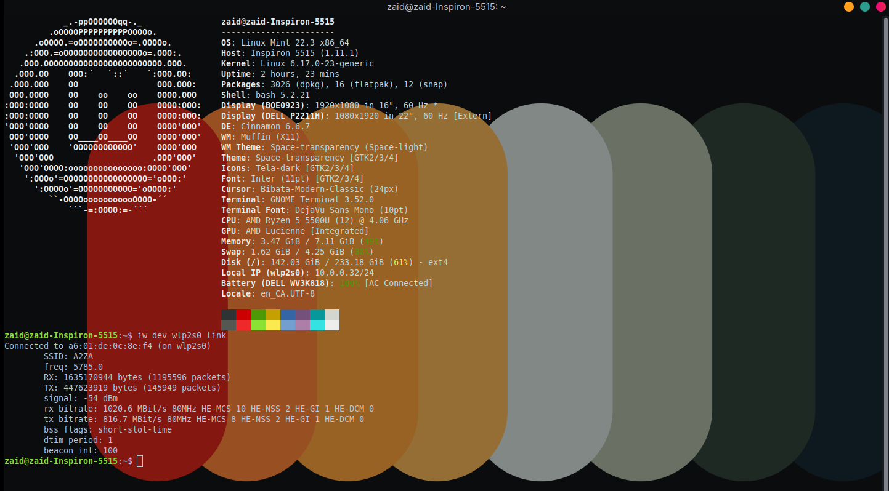

[ kernel · networking ]
Linux Wireless
Kernel Patch
View on GitHub ↗
What it is
My Wi-Fi was stuck at 54 Mbps when it should have been hitting 1 Gbps. The kernel was silently picking the slower mode with no indication anything was wrong. I went into the driver to find out why, then patched it.
The problem
Intel AX200 cards and Rogers XB10 routers have a beacon frame incompatibility that causes the mac80211 driver to silently downgrade from 802.11ac to 802.11n. The result is a 54 Mbps connection instead of 1000+ Mbps — no error, no log entry, nothing.
Before & after


How I fixed it
Traced through the mac80211 wireless stack until I found where the speed negotiation breaks. The driver was accepting the downgrade without validating it against the actual hardware capabilities. Patched it to hold the correct HT mode and reject invalid downgrades.
+ validate HT capability before accepting downgrade
+ reject beacon-induced mode switch when incompatible